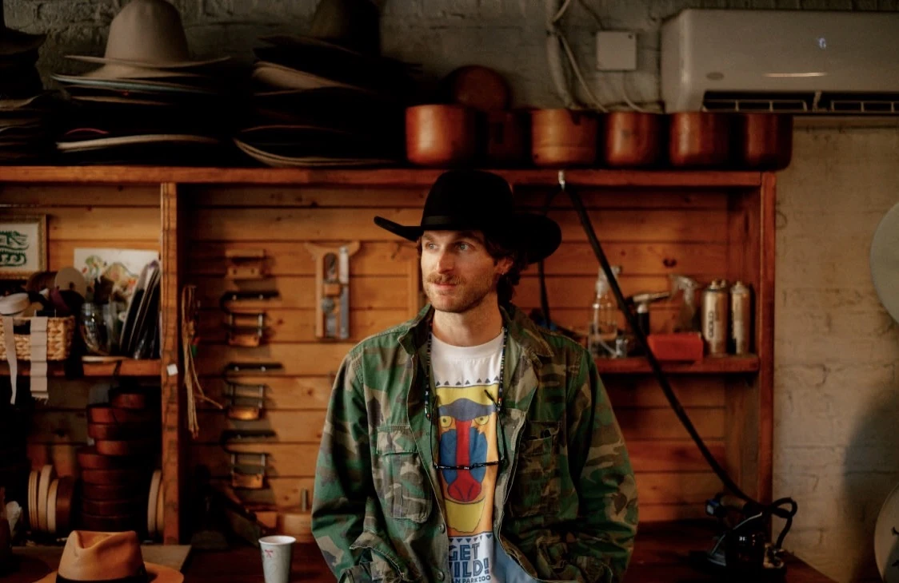
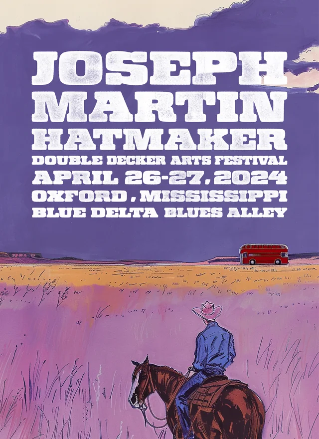
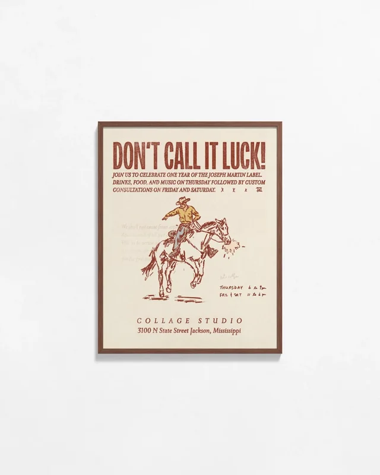

The Hatmaker
Joseph
Benjamin
Martin
Western hats and dress fedoras, made by hand, start to finish, in a shop on Villa Place in Nashville.
Joseph Martin in the workshopPhotograph · credit to confirm
Fourth time’s a charm.
That is what Joseph calls his own story. It is his to tell, and this page will carry it in his words, not ours.
Where the work has been
From the record- MississippiGrowing up
His “About Joseph” page is a memoir of growing up in Mississippi, told in seasons. Source: josephbenmartin.com/pages/meet-joseph
- Oxford, MSDouble Decker
Joseph Martin Hatmaker at the Double Decker Arts Festival, Blue Delta Blues Alley, April 26–27, 2024. Source: festival poster
- Jackson, MSOne year
“Jackson’s own Joseph Benjamin Martin has survived one year of business as a full-time craftsman.” A celebration and custom consultations at Collage Studio. Source: anniversary posters
- Nashville, TNVilla Place
The shop today: 1200 Villa Place, Suite 200. Commissions are taken from a waitlist. Source: josephbenmartin.com/pages/contact
In the shop
Five photographs to be madeTo photographSteam rising off felt. Hands only, dark background.
To photographShaping the crown while the felt is still damp. Raking light on the nap.
To photographThe brim flat on the bench, overhead, tools where they are used.
To photographStitching at the sweatband, macro.
To photographTying a band or setting a charm, shallow focus.
Documentary, one light, nothing staged. The order of these frames is the order of the work, to be corrected by Joseph.
Printed matter
Posters made for Joseph Martin

